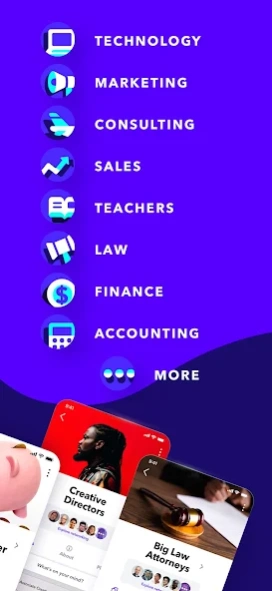

Fishbowl 藏得最深的 5 个冷门功能——用了半年才发现原来还能这样
大多数人只拿 Fishbowl 当匿名职场吐槽站？其实它的 Bowl 搜索、直播主持、内推直通、同公司对接和 Networking Mode 藏着一堆官方从不宣传的用法，翻到底朝天才挖出来。
你以为从官网上看，Fishbowl 就是个匿名版脉脉——刷刷 Feed 看看同行吐槽、偶尔搜一下公司薪资？我当初从官方下载装上的时候也没多想，用了快半年也这么觉得，直到上周为了找一个四大 Bowl 翻遍了三级菜单，才发现这应用藏得真深。很多功能官方不宣传、社区也没人提，但用对了能省你好几个小时的信息搜集。
下面五个，是我翻了设置、扒了 Bowl 入口、跟几个老用户聊完才挖出来的——
1. Bowl 搜索不只是"搜索框"，还能按类型筛选
大多数人进 Bowls 页面就是随手往下滑，看到感兴趣的就点进去。但 Bowls 顶部那个搜索框旁边，藏着一个几乎没人注意的筛选按钮。
点那个漏斗图标，你会看到三个维度：Industry、Company、Community。这正好对应 Fishbowl 三种 Bowl 的分类逻辑——行业 Bowl 是自动加入的，公司 Bowl 得是员工才能进，社区 Bowl 任何人都能申请。
我之前想找"女性职业发展"相关的社区 Bowl，在搜索框里搜关键词出来一堆行业 Bowl 混在一起，根本看不清哪个是社区类的。用筛选器把类型锁定 Community，结果一下子干净了，三分钟就找到了三个活跃的。
什么人用得上：刚注册 Fishbowl 的新用户，面对几百个 Bowl 不知道从哪下手的；或者你想找一个特别垂直的小众社区 Bowl——比如"LGBTQ+ in Consulting"这种，直接搜关键词大概率被行业 Bowl 淹没，筛选器一锁就出来了。
什么人可以无视：已经固定在几个 Bowl 里蹲点的老用户，懒得折腾就算了。

2. Live Events 不只是听，普通人也能申请当主持人
这个功能藏得最深——我以为只有社区 Lead 或大 V 才能发起活动，直到 Settings → Events 下面那个 Apply to Host 选项跳出来。
点进去看，申请条件其实没那么苛刻：已完成身份验证的活跃用户，或者在某个 Bowl 里经常发帖的贡献者，都能提交申请。我认识一个在咨询公司工作两年的朋友，上个月刚批下来，在 Tech Bowl 搞了一场"从 Consulting 跳去 Product 的真实路径"圆桌，来了三十多个人听。
而且发起活动的流程比想象中简单——填个标题、选个时间（记得选对时区，我见过有人选成美东结果整场活动只有三个人到场）、写一段简介，提交之后平台审核一两天就过。活动创建完可以在相关 Bowl 里发预告，Feed 动态也能推一下。
什么人用得上：想在行业里混个脸熟但又不好意思直接发帖推销自己的——主持一场活动比发十篇帖子管用；或者你有东西想分享但不想写长文，语音聊反而更轻松。
什么坑别踩：别在活动里暴露真实姓名或具体公司。Fishbowl 的半匿名机制在 Live Events 里依然生效，但如果你说"我是 BCG 上海的"，那同部门的人大概率能猜到你是谁——这个保密意识跟平时发帖一样重要。完整的主持人权限申请流程和活动参数配置，我后来去fishbowl文档翻了一下才把所有细节理顺。
3. Networking Mode 开了之后，Careers 里会多一个"内推直通"入口
这是我最近才发现的联动功能。在 Me 页面打开 Networking Mode（就是那个小开关，默认关着），然后回到 Careers 页面——你会发现职位列表里多了一个额外的标记。
开启 Networking Mode 后，Fishbowl 会把你标记成"愿意接受同行对接"的用户，Careers 板块会优先把那些已经开启 Networking Mode 的同行发布的内推职位推到你前面。而且这些职位会带一个特殊标签，点开之后能直接跟内推人发消息聊——不用走公开招聘通道，相当于跳过了 HR 海选环节。
我上周试了一下，开了 Networking Mode 之后 Careers 推荐的职位一下子从 Indeed 聚合的公开岗位，变成了清一色同行直接发布的内推。随便点一个，发帖人已经帮你把面试流程、面试官背景、甚至薪资范围都写清楚了。
什么人用得上：正在找工作或者想跳槽的——内推通过率比网申高太多，而且 Fishbowl 上的内推人基本都是目标公司的在职员工，信息非常真实。
什么坑别踩：开了 Networking Mode 之后会收到陌生人的私信骚扰，尤其是比较热门行业的用户。如果你不想被打扰，记得在 Settings → Privacy 里把"允许陌生人私信"关掉，只接受 Bowl 内成员的消息。
4. 同公司对接功能，能找到你公司里所有开了 Networking 的同事
这个功能藏在 Networking 页面的一个二级入口里——My Company。
点进去之后，Fishbowl 会列出你所在公司所有开启了 Networking Mode 的用户。这意味着你可以直接跟同公司但不同部门的同事打招呼，问一些平时在茶水间不好开口的问题——比如"你们组的晋升通道怎么样"、"内部转岗要走什么流程"。
我有个朋友在四大，用这个功能联系到了隔壁组的一个高级经理，聊了两次之后对方主动说"有个项目经理的空缺，我帮你内推"。这在平时是完全不可能的——你总不能在公司群里 @ 一个你不认识的高级经理问这些吧。
什么人用得上：想内部转岗、想了解其他部门情况、或者单纯想在公司里拓展人脉的。
什么坑别踩：别让你的领导知道你开了这个功能。虽然 Fishbowl 不会主动通知，但如果你的领导也在 Fishbowl 上，而且他自己也开了 Networking Mode，那他就能在 My Company 里看到你。建议想跳槽的同学谨慎开启，或者只在确定不会被同事认出来的时候用。
5. Feed 顶部的 Bowl 下拉菜单，能单独看某个 Bowl 的动态
这个是最不起眼但最实用的——Feed 页面顶部有个下拉菜单，默认显示"All Bowls"，点一下可以切换到你加入的任意一个 Bowl，单独看那个 Bowl 的动态。
我之前一直以为 Feed 就是所有 Bowl 的内容混在一起刷，直到某天不小心手滑点到了那个下拉菜单。切换到单独一个 Bowl 之后，那个 Bowl 里的帖子全部按时间线排好，没有其他 Bowl 的内容混进来——想蹲某个 Bowl 的最新讨论时，这个功能比在 Bowls 页面里点进去一个个看方便太多。
而且如果你加入了一个特别活跃的 Bowl（比如 MBB Bowl 或 Google Bowl），单独看它的动态可以第一时间抓到重要信息——比如有人爆料内部裁员、或者有 senior 发帖招内推，这些在混排 Feed 里很容易被刷下去。
什么人用得上：加入了多个 Bowl 但只想盯一两个重点的，或者对某个 Bowl 的内容特别感兴趣想第一时间跟进的。
什么人可以无视：就爱刷混合 Feed 、觉得随机发现新内容更有意思的，那就保持默认就行。
最后说一句
Fishbowl 这个应用，产品迭代一直挺克制的——很多其他社交平台有的功能它没有（比如网页版、高级搜索、收藏夹导出），但它藏起来的这些小功能，都是针对职业社交这个场景做的精细打磨。整理过程中用到的原始资料和参考笔记，我顺手传到了 GitHub、Gitee 和 GitCode 三个代码仓库，国内访问不方便的时候换着用就行。